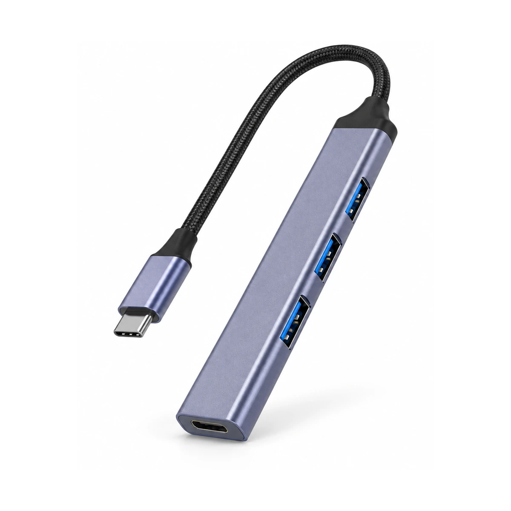
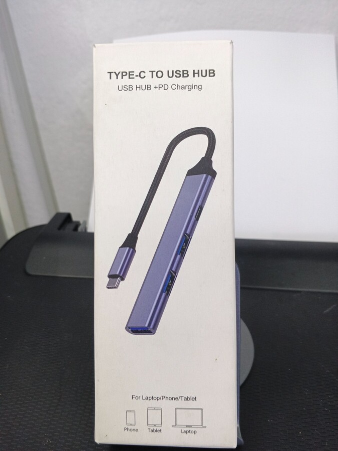
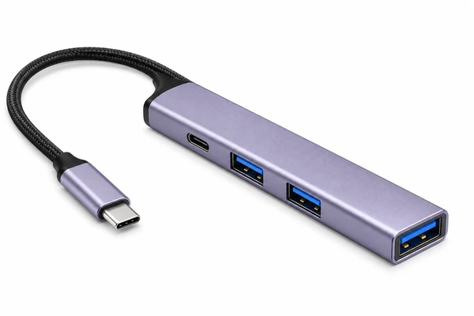
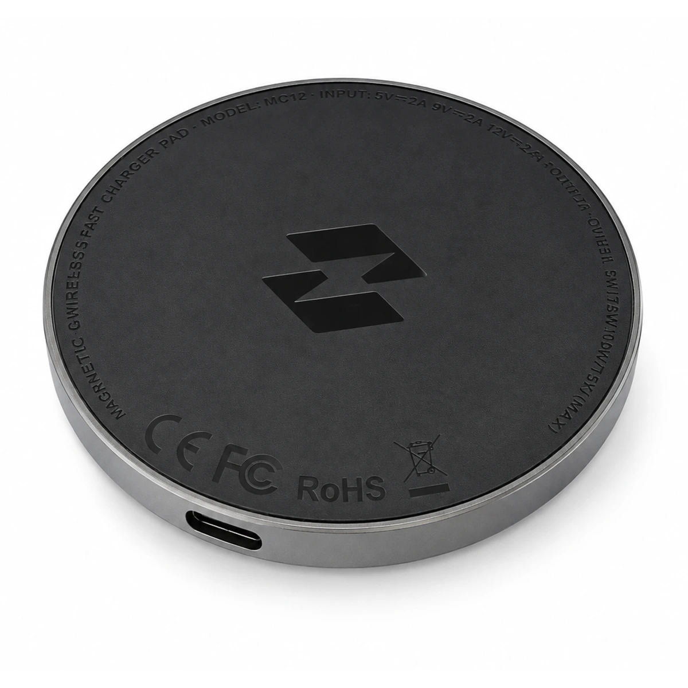
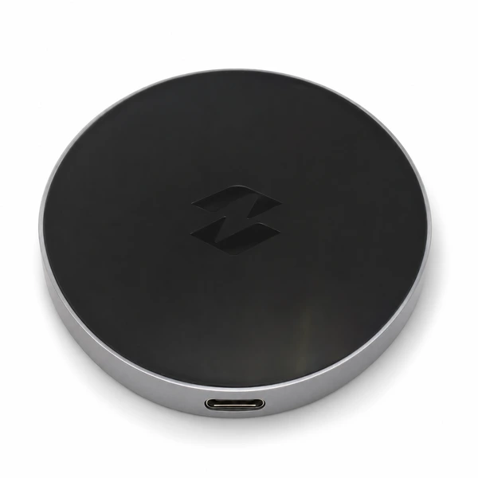

HUB016 · Hub USB-C con tres USB-A y USB-C PD

Publicada · se conserva
Referencia propia · empaque del modelo
Propuesta · portada corregidaCorrección propuesta de la distribución: USB-C PD junto al cable y dos USB-A en el lateral; tercer USB-A en el extremo. La imagen actual intercambia esas posiciones. Las dos ilustraciones propias del modelo respaldan la propuesta; no equivalen a aprobación física definitiva.
Original 1 en Drive · Original 2 en Drive
Descargar propuesta de 1200 pxADAP053 · Adaptador de audio 6,35 mm hembra a 3,5 mm macho estéreo
Vista horizontal con la toma hembra de 6,35 mm más reconocible y la clavija estéreo de 3,5 mm completa. Conserva sus dos anillos aislantes.
Original 1 en Drive
Descargar propuesta de 1200 pxADAP086 · Adaptador HDMI en L | conexión en ángulo
Vista de detalle con la entrada HDMI hembra orientada hacia el comprador y el conector macho completo; mantiene el cuerpo acodado del modelo.
Original 1 en Drive
Descargar propuesta de 1200 pxADAP091 · Adaptador 3,5 mm a tres RCA hembra
Las tres tomas RCA verde, azul y roja quedan de frente. La clavija conserva los tres anillos aislantes observados en la fotografía física.
Original 1 en Drive
Descargar propuesta de 1200 pxCAPT004 · Capturadora HDMI a USB de formato compacto
Acerca la entrada HDMI y conserva visible la salida USB-A. Presentación del modelo exacto representado en su empaque, sin añadir conexiones.
Original 1 en Drive
Descargar propuesta de 1200 pxCUBO018 · Cargador Monster de 20 W con USB-C y USB-A
Acerca el panel de salida: USB-C negro arriba y USB-A naranja abajo, según la referencia propia Monster. No cambia patas ni añade accesorios.
Original 1 en Drive
Descargar propuesta de 1200 pxPOWE003 · Batería portátil Philco FLP8202CV 20.000 mAh
Detalle del panel físico: USB-A naranja, USB-C y ventana del indicador. Mantiene el azul, la disposición y la carcasa recta; no inventa porcentajes de batería.
Original 1 en Drive · Original 2 en Drive
Descargar propuesta de 1200 pxCARG069 · Cargador inalámbrico Infinix MagPad | diseño compacto

Publicada · se conservaFotografía física original de CARG069
Original 1 en Drive · Original 2 en Drive
Se consulta en Drive para conservar fuera de esta entrega el mostrador y las etiquetas de otros artículos.
Propuesta · secundariaSuperficie y toma USB-C visibles, con reflejos de mostrador eliminados. La serigrafía técnica tenue no se transcribe ni certifica: su reproducción sigue pendiente antes de una eventual sustitución de portada.
Original 1 en Drive · Original 2 en Drive
Descargar propuesta de 1200 px